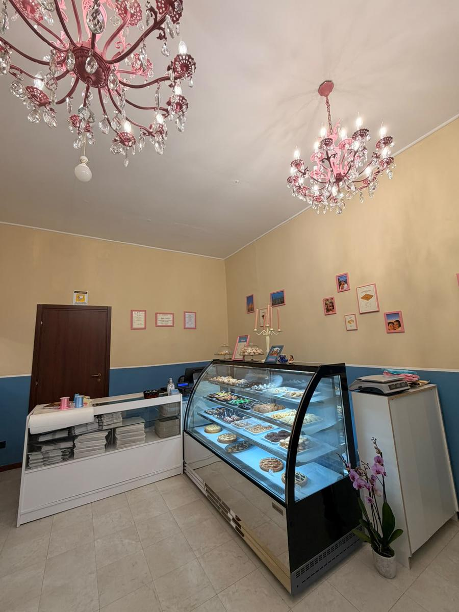
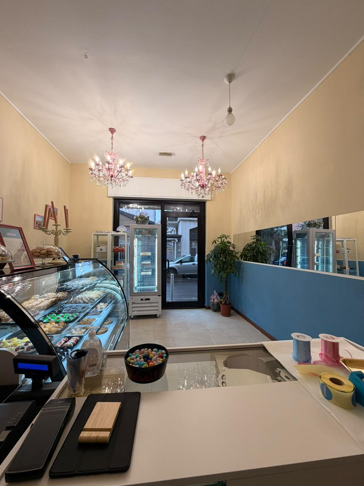
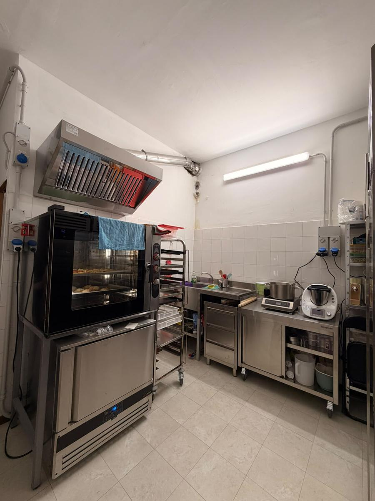
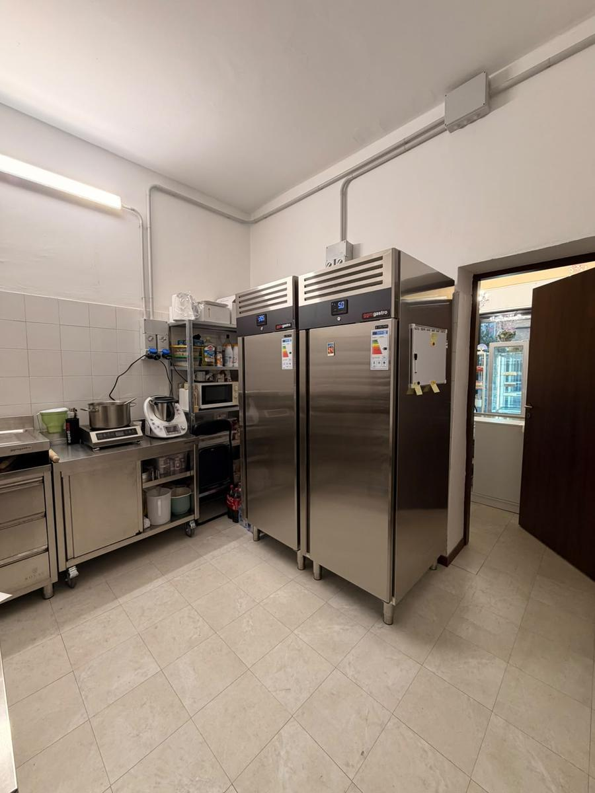

Piccoli dolci, fatti con cura.
Ninnì è una pasticceria artigianale a Baggio. Torte, paste e biscotti, cornetti anche vegani e senza glutine e un angolo salato con pizzette e focaccia, tutto da portare via.


Mi chiamo Martina e questa è Ninnì.
Ninnì è un sogno nato dal cuore, dalla mia passione per la pasticceria e dal desiderio di creare qualcosa che potesse raccontare un po’ di me.
Il nome Ninnì era il modo dolce con cui mi chiamava mia nonna, una persona speciale che oggi non è più qui, ma che continua ad accompagnarmi ogni giorno. Ho scelto questo nome per portare con me il suo ricordo e trasformare una parte di quell’amore in qualcosa di concreto.
Da qui nasce Ninnì Pasticceria Artigianale: dalla voglia di creare qualcosa di mio e dal desiderio di regalare alle persone la stessa sensazione di calore, cura e dolcezza che custodisco nei miei ricordi.
Martina
Dietro al bancone
Tutto quello che trovi in vetrina nasce qui, nel nostro laboratorio.


Una torta per un'occasione speciale?
Compleanni, anniversari, pranzi della domenica. Scegliamo insieme gusto, dimensione e decorazione, poi passi a ritirarla in pasticceria.
Prenota almeno 2 giorni primaTorte classiche 30 €/kg · torte particolari colorate 35 €/kg
Come prenotare
Prepara il messaggio
Niente consegne a domicilio: tutti i dolci si ritirano in pasticceria.
Vieni a trovarci a Baggio.
- Martedì – Venerdì
- 8:00–12:30 · 15:30–19:30
- Sabato
- 8:30–12:30 · 15:30–19:00
- Domenica
- 8:00–13:00
- Lunedì
- Chiuso